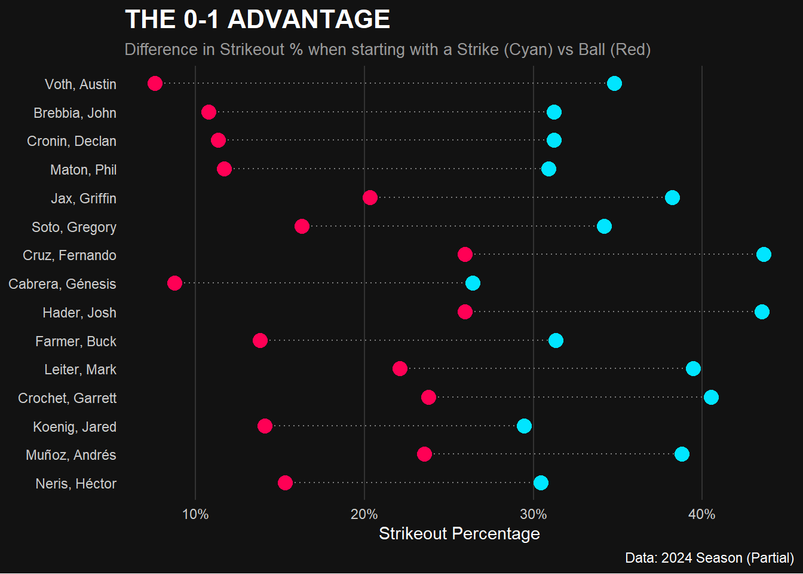

library(tidyverse)── Attaching core tidyverse packages ──────────────────────── tidyverse 2.0.0 ──
✔ dplyr 1.1.4 ✔ readr 2.1.6
✔ forcats 1.0.1 ✔ stringr 1.6.0
✔ ggplot2 4.0.1 ✔ tibble 3.3.0
✔ lubridate 1.9.4 ✔ tidyr 1.3.2
✔ purrr 1.2.0
── Conflicts ────────────────────────────────────────── tidyverse_conflicts() ──
✖ dplyr::filter() masks stats::filter()
✖ dplyr::lag() masks stats::lag()
ℹ Use the conflicted package (<http://conflicted.r-lib.org/>) to force all conflicts to become errorsx <- read_csv("fps_analysis_2024.csv")Rows: 157875 Columns: 10
── Column specification ────────────────────────────────────────────────────────
Delimiter: ","
chr (3): player_name, first_pitch_result, final_event
dbl (1): game_pk
lgl (5): is_hit, is_walk, is_homerun, is_strikeout, is_out
date (1): game_date
ℹ Use `spec()` to retrieve the full column specification for this data.
ℹ Specify the column types or set `show_col_types = FALSE` to quiet this message.# --- 1. Data Prep ---
plot_data <- x %>%
group_by(player_name) %>%
# FIX: Lowered threshold from 1000 to 200 so we don't filter everyone out
filter(n() > 200) %>%
ungroup() %>%
filter(first_pitch_result %in% c("Strike", "Ball")) %>%
group_by(player_name, first_pitch_result) %>%
summarize(k_rate = mean(is_strikeout, na.rm = TRUE), .groups = "drop") %>%
pivot_wider(names_from = first_pitch_result, values_from = k_rate) %>%
# Safety Check: Remove rows where a pitcher didn't have BOTH Ball and Strike data
filter(!is.na(Strike) & !is.na(Ball)) %>%
mutate(diff = Strike - Ball) %>%
arrange(desc(diff)) %>%
slice_head(n = 15) # Top 15 pitchers with biggest gap
# --- 2. The Plot ---
ggplot(plot_data) +
# The Connecting Line
geom_segment(aes(x = Ball, xend = Strike, y = reorder(player_name, diff), yend = reorder(player_name, diff)),
color = "grey50", size = 0.5, linetype = "dotted") +
# The "Ball 1" Dot (Red)
geom_point(aes(x = Ball, y = reorder(player_name, diff)),
color = "#ff0055", size = 4) +
# The "Strike 1" Dot (Cyan)
geom_point(aes(x = Strike, y = reorder(player_name, diff)),
color = "#00e5ff", size = 4) +
# Labels/Theme
scale_x_continuous(labels = scales::percent_format(accuracy = 1)) +
labs(
title = "THE 0-1 ADVANTAGE",
subtitle = "Difference in Strikeout % when starting with a Strike (Cyan) vs Ball (Red)",
x = "Strikeout Percentage",
y = NULL,
caption = "Data: 2024 Season (Partial)"
) +
theme_minimal(base_family = "sans") +
theme(
plot.background = element_rect(fill = "#121212", color = NA),
panel.background = element_rect(fill = "#121212", color = NA),
text = element_text(color = "white"),
axis.text = element_text(color = "grey80"),
panel.grid.major.y = element_blank(),
panel.grid.major.x = element_line(color = "grey20"),
panel.grid.minor = element_blank(),
plot.title = element_text(face = "bold", size = 16, color = "white"),
plot.subtitle = element_text(size = 10, color = "grey60")
)Warning: Using `size` aesthetic for lines was deprecated in ggplot2 3.4.0.
ℹ Please use `linewidth` instead.